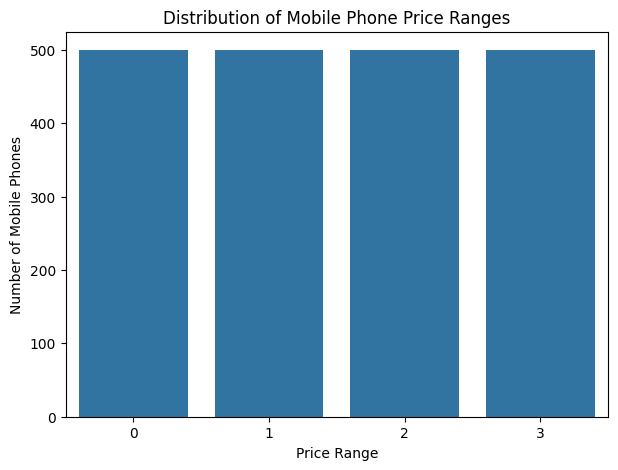
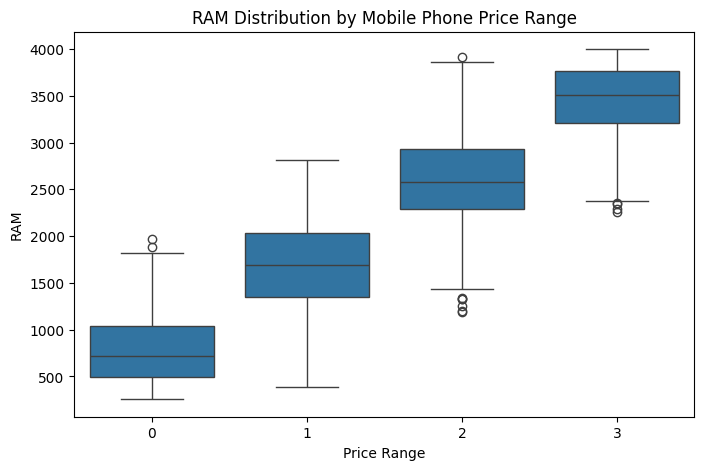
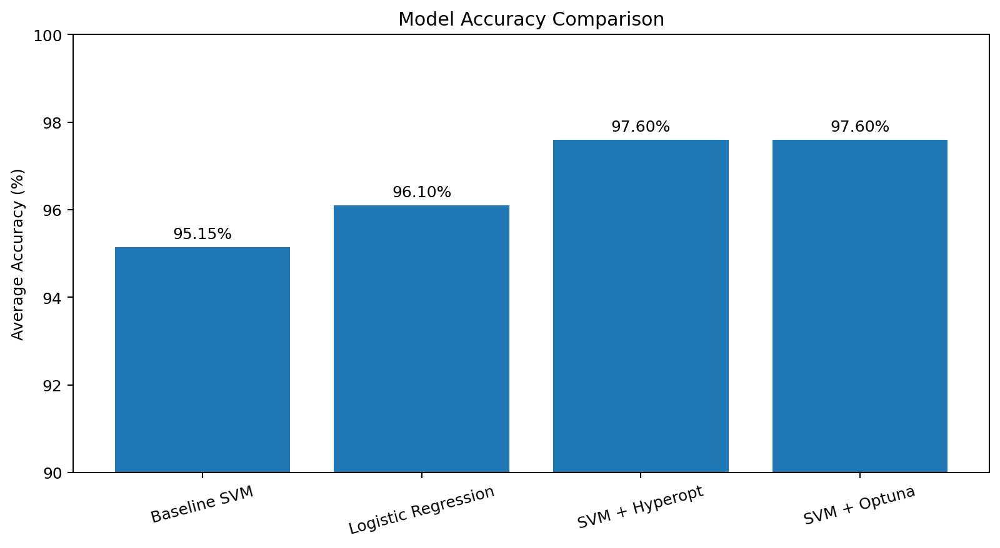

PROJECT 01
Mobile Phone Price Classification
A multiclass machine learning project focused on classifying mobile phones into four price categories using Support Vector Machines, hyperparameter optimization, and Logistic Regression.
OVERVIEW
Project Overview
This project replicates and extends a published research study on mobile phone price classification.
The original methodology used Support Vector Machines and hyperparameter optimization frameworks. I reproduced the approach, improved the validation workflow, and added Logistic Regression as an additional classification model.
PROBLEM
Business Problem
The objective is to classify mobile phones into four market price categories based on technical specifications such as RAM, battery power, storage, display resolution, cameras, processor characteristics, and connectivity features.
DATA
Dataset
The dataset contains 2,000 mobile phones and 20 technical input features. The target variable contains four equally represented price categories.
Observations
2,000
Mobile PhonesInput Variables
20
FeaturesPrice Categories
4
ClassesObservations per Class
500
Balanced DatasetMETHODOLOGY
Approach
The project used five-fold stratified cross-validation to evaluate model performance while maintaining the same class distribution across folds.
Hyperopt and Optuna were used to optimize important SVM hyperparameters including kernel type, C, gamma, and multiclass decision strategy.
RESULTS
Model Performance
Hyperparameter optimization improved the performance of the baseline Support Vector Machine. Hyperopt and Optuna achieved the strongest average classification accuracy.
Baseline SVM
95.15%
AccuracySVM + Hyperopt
97.60%
AccuracySVM + Optuna
97.60%
AccuracyLogistic Regression
96.10%
AccuracyKEY FINDINGS
What the Results Show
Hyperparameter optimization improved SVM accuracy from 95.15% to 97.60%.
Hyperopt and Optuna produced the same average accuracy in this project.
RAM showed the strongest relationship with mobile phone price category, with a correlation of approximately 0.917.
Logistic Regression provided a strong simpler alternative while remaining below the optimized SVM models.
VISUALIZATIONS
Project Visualizations

Balanced Target Distribution
The dataset contains four equally represented price categories with 500 mobile phones in each class.

RAM vs. Price Range
RAM showed the strongest relationship with price category and was an important predictor of mobile phone market positioning.

Model Accuracy Comparison
Hyperopt and Optuna increased average SVM accuracy from 95.15% to 97.60%.
MY CONTRIBUTION
Logistic Regression Extension
In addition to reproducing the SVM methodology from the research paper, I evaluated Logistic Regression as a simpler and more interpretable multiclass classification alternative.
StandardScaler and Logistic Regression were combined inside a Scikit-learn Pipeline so scaling was learned only from the training data within each fold.
Logistic Regression
96.10%
Average AccuracyTOOLS
Technologies Used
KEY TAKEAWAYS
What I Learned
Optimizing SVM parameters produced a measurable improvement over the baseline model.
Keeping model selection separate from final evaluation reduces the risk of data leakage and overly optimistic performance estimates.
Logistic Regression achieved strong performance and provided a simpler alternative for comparison.
PROJECT RESOURCES
Explore the Full Project
Review the complete presentation for a visual summary of the research paper, methodology, optimization process, results, and project contribution.